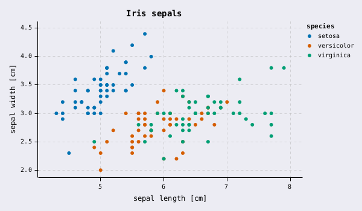
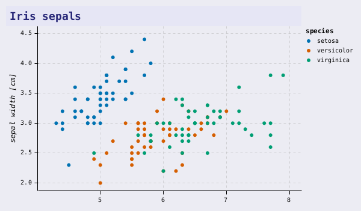
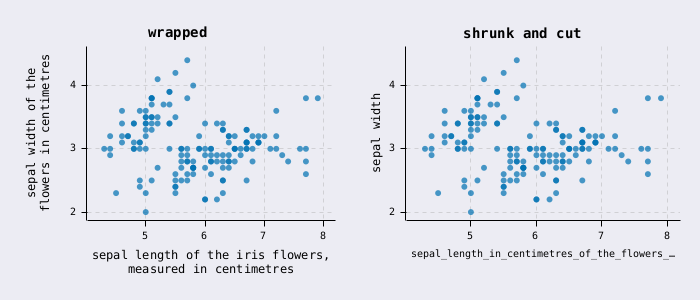

7 Labels and text
A plot has a title and two axis titles (:labels), each a string or a label map with its own text style. Text drawn by charts (the text chart, value labels, strip and legend texts) takes its style from a theme text role.
(ns reference.labels-text
(:require [cljplot2.chart :as chart]
[cljplot2.content.label :as label]
[cljplot2.core :as plot]
[cljplot2.describe :as describe]
[cljplot2.graphics.font :as font]
[cljplot2.layout.plot-grid :as plot-grid]
[notebook-utils :as nu]))7.1 Plot labels
The plot title and the axis titles. Axis titles are absent unless given, except that statistical charts (histogram, density, ecdf, qq …) suggest one for their computed axis.
| Option | Type | Default | Description |
|---|---|---|---|
| :title | a label options map (:text, :role, :rotation, text style keys) or any value or nil | plot title above the panels (role :title) | |
| :x | a label options map (:text, :role, :rotation, text style keys) or any value or nil | the first chart's suggested title (histogram, density, ecdf, qq, pp ...), else none | x axis title (role :axis-title) |
| :y | a label options map (:text, :role, :rotation, text style keys) or any value or nil | the first chart's suggested title (histogram, density, ecdf, qq, pp ...), else none | y axis title (role :axis-title, rotated 270) |
Data: Edgar Anderson’s iris measurements, R datasets package iris (Anderson 1935; Fisher 1936); licence: Part of R (GPL-2 | GPL-3).
(def iris (nu/dataset :iris))| sepal-length | sepal-width | petal-length | petal-width | species |
|---|---|---|---|---|
| 5.1 | 3.5 | 1.4 | 0.2 | setosa |
| 4.9 | 3 | 1.4 | 0.2 | setosa |
| 4.7 | 3.2 | 1.3 | 0.2 | setosa |
| 4.6 | 3.1 | 1.5 | 0.2 | setosa |
| 5 | 3.6 | 1.4 | 0.2 | setosa |
| 5.4 | 3.9 | 1.7 | 0.4 | setosa |
| 4.6 | 3.4 | 1.4 | 0.3 | setosa |
| 5 | 3.4 | 1.5 | 0.2 | setosa |
| 4.4 | 2.9 | 1.4 | 0.2 | setosa |
| 4.9 | 3.1 | 1.5 | 0.1 | setosa |
| 5.4 | 3.7 | 1.5 | 0.2 | setosa |
| 4.8 | 3.4 | 1.6 | 0.2 | setosa |
| 4.8 | 3 | 1.4 | 0.1 | setosa |
| 4.3 | 3 | 1.1 | 0.1 | setosa |
| 5.8 | 4 | 1.2 | 0.2 | setosa |
| 5.7 | 4.4 | 1.5 | 0.4 | setosa |
| 5.4 | 3.9 | 1.3 | 0.4 | setosa |
| 5.1 | 3.5 | 1.4 | 0.3 | setosa |
| 5.7 | 3.8 | 1.7 | 0.3 | setosa |
| 5.1 | 3.8 | 1.5 | 0.3 | setosa |
| 5.4 | 3.4 | 1.7 | 0.2 | setosa |
| 5.1 | 3.7 | 1.5 | 0.4 | setosa |
| 4.6 | 3.6 | 1 | 0.2 | setosa |
| 5.1 | 3.3 | 1.7 | 0.5 | setosa |
| 4.8 | 3.4 | 1.9 | 0.2 | setosa |
| 5 | 3 | 1.6 | 0.2 | setosa |
| 5 | 3.4 | 1.6 | 0.4 | setosa |
| 5.2 | 3.5 | 1.5 | 0.2 | setosa |
| 5.2 | 3.4 | 1.4 | 0.2 | setosa |
| 4.7 | 3.2 | 1.6 | 0.2 | setosa |
| 4.8 | 3.1 | 1.6 | 0.2 | setosa |
| 5.4 | 3.4 | 1.5 | 0.4 | setosa |
| 5.2 | 4.1 | 1.5 | 0.1 | setosa |
| 5.5 | 4.2 | 1.4 | 0.2 | setosa |
| 4.9 | 3.1 | 1.5 | 0.2 | setosa |
| 5 | 3.2 | 1.2 | 0.2 | setosa |
| 5.5 | 3.5 | 1.3 | 0.2 | setosa |
| 4.9 | 3.6 | 1.4 | 0.1 | setosa |
| 4.4 | 3 | 1.3 | 0.2 | setosa |
| 5.1 | 3.4 | 1.5 | 0.2 | setosa |
| 5 | 3.5 | 1.3 | 0.3 | setosa |
| 4.5 | 2.3 | 1.3 | 0.3 | setosa |
| 4.4 | 3.2 | 1.3 | 0.2 | setosa |
| 5 | 3.5 | 1.6 | 0.6 | setosa |
| 5.1 | 3.8 | 1.9 | 0.4 | setosa |
| 4.8 | 3 | 1.4 | 0.3 | setosa |
| 5.1 | 3.8 | 1.6 | 0.2 | setosa |
| 4.6 | 3.2 | 1.4 | 0.2 | setosa |
| 5.3 | 3.7 | 1.5 | 0.2 | setosa |
| 5 | 3.3 | 1.4 | 0.2 | setosa |
| 7 | 3.2 | 4.7 | 1.4 | versicolor |
| 6.4 | 3.2 | 4.5 | 1.5 | versicolor |
| 6.9 | 3.1 | 4.9 | 1.5 | versicolor |
| 5.5 | 2.3 | 4 | 1.3 | versicolor |
| 6.5 | 2.8 | 4.6 | 1.5 | versicolor |
| 5.7 | 2.8 | 4.5 | 1.3 | versicolor |
| 6.3 | 3.3 | 4.7 | 1.6 | versicolor |
| 4.9 | 2.4 | 3.3 | 1 | versicolor |
| 6.6 | 2.9 | 4.6 | 1.3 | versicolor |
| 5.2 | 2.7 | 3.9 | 1.4 | versicolor |
| 5 | 2 | 3.5 | 1 | versicolor |
| 5.9 | 3 | 4.2 | 1.5 | versicolor |
| 6 | 2.2 | 4 | 1 | versicolor |
| 6.1 | 2.9 | 4.7 | 1.4 | versicolor |
| 5.6 | 2.9 | 3.6 | 1.3 | versicolor |
| 6.7 | 3.1 | 4.4 | 1.4 | versicolor |
| 5.6 | 3 | 4.5 | 1.5 | versicolor |
| 5.8 | 2.7 | 4.1 | 1 | versicolor |
| 6.2 | 2.2 | 4.5 | 1.5 | versicolor |
| 5.6 | 2.5 | 3.9 | 1.1 | versicolor |
| 5.9 | 3.2 | 4.8 | 1.8 | versicolor |
| 6.1 | 2.8 | 4 | 1.3 | versicolor |
| 6.3 | 2.5 | 4.9 | 1.5 | versicolor |
| 6.1 | 2.8 | 4.7 | 1.2 | versicolor |
| 6.4 | 2.9 | 4.3 | 1.3 | versicolor |
| 6.6 | 3 | 4.4 | 1.4 | versicolor |
| 6.8 | 2.8 | 4.8 | 1.4 | versicolor |
| 6.7 | 3 | 5 | 1.7 | versicolor |
| 6 | 2.9 | 4.5 | 1.5 | versicolor |
| 5.7 | 2.6 | 3.5 | 1 | versicolor |
| 5.5 | 2.4 | 3.8 | 1.1 | versicolor |
| 5.5 | 2.4 | 3.7 | 1 | versicolor |
| 5.8 | 2.7 | 3.9 | 1.2 | versicolor |
| 6 | 2.7 | 5.1 | 1.6 | versicolor |
| 5.4 | 3 | 4.5 | 1.5 | versicolor |
| 6 | 3.4 | 4.5 | 1.6 | versicolor |
| 6.7 | 3.1 | 4.7 | 1.5 | versicolor |
| 6.3 | 2.3 | 4.4 | 1.3 | versicolor |
| 5.6 | 3 | 4.1 | 1.3 | versicolor |
| 5.5 | 2.5 | 4 | 1.3 | versicolor |
| 5.5 | 2.6 | 4.4 | 1.2 | versicolor |
| 6.1 | 3 | 4.6 | 1.4 | versicolor |
| 5.8 | 2.6 | 4 | 1.2 | versicolor |
| 5 | 2.3 | 3.3 | 1 | versicolor |
| 5.6 | 2.7 | 4.2 | 1.3 | versicolor |
| 5.7 | 3 | 4.2 | 1.2 | versicolor |
| 5.7 | 2.9 | 4.2 | 1.3 | versicolor |
| 6.2 | 2.9 | 4.3 | 1.3 | versicolor |
| 5.1 | 2.5 | 3 | 1.1 | versicolor |
| 5.7 | 2.8 | 4.1 | 1.3 | versicolor |
| … | … | … | … | … |
(plot/render-image {:data iris
:mapping {:x :sepal-length :y :sepal-width :color :species}
:charts [(chart/scatter)]
:labels {:title "Iris sepals" :x "sepal length [cm]" :y "sepal width [cm]"}}
{:width 600 :height 350})
7.2 Label maps
A label is a string or a label map: the text, the theme text role whose style is the base (:title for the title, :axis-title for axis titles, or a role of your theme) and a rotation. Plot labels get their role from their place; a label in a custom grid (Facets chapter) must name one. Here the y title is horizontal and styled as a tick label.
| Option | Type | Default | Description |
|---|---|---|---|
| :kind | :label | content kind (labels only) | |
| :text | any value | the text (converted with str; \n breaks lines) | |
| :role | keyword | theme text role styling the label (:title, :axis-title, ... or a role of your theme) | |
| :rotation | one of 0 90 270 | 0 | clockwise degrees (270 reads bottom to top) |
(plot/render-image {:data iris
:mapping {:x :petal-length :y :petal-width}
:charts [(chart/scatter)]
:labels {:x {:text "petal length\n[cm]"}
:y {:text "petal\nwidth" :rotation 0 :role :tick-label}}}
{:width 600 :height 350})
7.3 Label style
Text style keys in a label map override its role’s style for this label only:
| Option | Type | Default | Description |
|---|---|---|---|
| :font | a bundled, installed or logical font name, or a java.awt.Font | font name (bundled, installed or logical) or a java.awt.Font | |
| :size | a positive number | font size in points | |
| :font-style | one of :bold :bold-italic :italic :plain | font style | |
| :color | a clojure2d color or :contrast | text colour; :contrast - black or white by what is behind (a chart's fill under its labels, else the plot background) | |
| :padding | a non-negative number | space around the text in pixels | |
| :align | [h v], h one of :left :center :right, v one of :top :middle :bottom | alignment [horizontal vertical] of the text at its anchor | |
| :background | a clojure2d color or :none | box colour behind the text (:none - no box) |
(plot/render-image {:data iris
:mapping {:x :sepal-length :y :sepal-width :color :species}
:charts [(chart/scatter)]
:labels {:title {:text "Iris sepals" :size 18 :align [:left :middle] :color [40 40 120]
:background [230 230 245] :padding 6}
:y {:text "sepal width [cm]" :font-style :italic}}}
{:width 600 :height 350})
7.4 Text in the panel
The text chart writes literal text or a mapped :label; :anchor, :offset and :rotation place it, :select :last labels the end of each group (e.g. line ends). Its full table is on the chart’s page.
(def series (for [[i g] (map-indexed vector ["alpha" "beta" "gamma"]) t (range 10)]
{:g g :t t :v (+ (* t (inc i) 0.5) (* 3 i))}))| g | t | v |
|---|---|---|
| alpha | 0 | 0.0 |
| alpha | 1 | 0.5 |
| alpha | 2 | 1.0 |
| alpha | 3 | 1.5 |
| alpha | 4 | 2.0 |
| alpha | 5 | 2.5 |
| alpha | 6 | 3.0 |
| alpha | 7 | 3.5 |
| alpha | 8 | 4.0 |
| alpha | 9 | 4.5 |
| beta | 0 | 3.0 |
| beta | 1 | 4.0 |
| beta | 2 | 5.0 |
| beta | 3 | 6.0 |
| beta | 4 | 7.0 |
| beta | 5 | 8.0 |
| beta | 6 | 9.0 |
| beta | 7 | 10.0 |
| beta | 8 | 11.0 |
| beta | 9 | 12.0 |
| gamma | 0 | 6.0 |
| gamma | 1 | 7.5 |
| gamma | 2 | 9.0 |
| gamma | 3 | 10.5 |
| gamma | 4 | 12.0 |
| gamma | 5 | 13.5 |
| gamma | 6 | 15.0 |
| gamma | 7 | 16.5 |
| gamma | 8 | 18.0 |
| gamma | 9 | 19.5 |
(plot/render-image {:data series
:mapping {:x :t :y :v :color :g}
:charts [(chart/line)
(chart/text {:mapping {:x :t :y :v :label :g} :select :last :anchor [:left :middle]})
(chart/text {:x [:panel 0.02] :y [:panel 0.95] :text "literal text in panel units"
:anchor [:left :middle] :font-style :italic})]
:legend false}
{:width 600 :height 350})
7.5 font/resolve-font
A text style’s :font is a family name or a java.awt.Font; resolve-font turns a name, a style (:plain, :bold, :italic, :bold-italic) and a size in points into the java.awt.Font drawn. Bundled families ("DejaVu Sans Mono" - the default theme’s font, "Noto Emoji") win over installed ones, so plots render alike on every platform; installed and logical families ("Serif", "SansSerif" …) work too, an unknown name throws {:key :font}. It takes no options map.
(font/resolve-font "DejaVu Sans Mono" :bold 14)#object[java.awt.Font 0x35b832 "java.awt.Font[family=DejaVu Sans Mono,name=DejaVu Sans Mono Bold,style=plain,size=14]"](font/resolve-font "Serif" :italic 12)#object[java.awt.Font 0x28b5ba47 "java.awt.Font[family=Serif,name=Serif,style=italic,size=12]"]A resolved font (here a bundled bold face) in a label, and a logical family by name for the axis titles:
(plot/render-image {:data iris
:mapping {:x :sepal-length :y :sepal-width :color :species}
:charts [(chart/scatter)]
:labels {:title {:text "Iris sepals" :font (font/resolve-font "DejaVu Sans Mono" :bold 18)}
:x {:text "sepal length [cm]" :font "Serif"}
:y {:text "sepal width [cm]" :font "Serif" :font-style :italic}}}
{:width 600 :height 350})
source: notebooks/reference/labels_text.clj